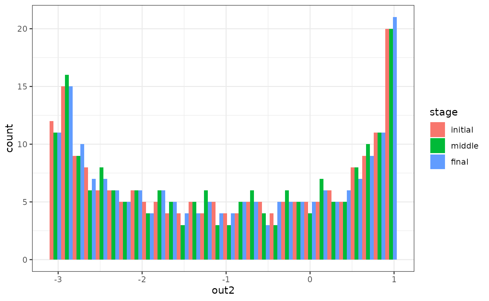

Introduction
The whole story starts with a dynamic model.
Formally speaking, a dynamic model is a set of equations that specify how all the variables of a system change over time. It usually takes the form of (stochastic) differential/difference equations.
These dynamic models are rather abstract, so they can only be used for computation when they are implemented in a simulation function. A simulation function is a function that simulates how the model variables change over time. It takes some parameters as input and returns a recording of the simulation process.
Currently, the whole package can only support the simulation function in a certain format. It should take (besides from other parameters) lists of model parameters as input, and give a matrix as the output. If your original simulation function is in another format, maybe some modification is needed.
If the dynamic system takes a simpler form, you may also use the
functions sim_SDE(). And you can use
multi_init_simulation() to simulate the system from
different initial points. We are still working on a concrete example
with those functions. For now, please consult the documentation of the
functions.
simlandr package provides a simulation function for a
simple toy model, which is called sim_fun_test(). You can
use this as an example of the correct function format. I will also use
this function as an example throughout this vignette. It takes
arg1 and arg2 as parameters: arg1
should be a list containing ele1 and ele2, and
arg2 should be a list containing ele3. It
takes this nested structure because real-life functions often have a
bunch of parameters in different categories (e.g., starting values,
model parameters, parameters that control the behavior of the simulation
function, etc.) To avoid confusion in terms, the package refers to these
first-layer parameters as args and second-layer parameters as
eles.
sim_fun_test
#> function (arg1, arg2, length = 1000)
#> {
#> output <- matrix(nrow = length, ncol = 3)
#> colnames(output) <- c("out1", "out2", "out3")
#> output[1, ] <- c(arg1$ele1, arg2$ele2, rnorm(1, sd = 0.01))
#> for (i in 2:length) {
#> output[i, 1] <- 0.5 * output[i - 1, 1] + output[i - 1,
#> 2] + arg2$ele3 + arg1$ele1 * arg2$ele2
#> output[i, 2] <- -0.5 * output[i - 1, 1] + output[i -
#> 1, 2] + arg2$ele3
#> output[i, 3] <- output[i - 1, 3] + rnorm(1, sd = 0.01)
#> }
#> return(output)
#> }
#> <bytecode: 0x559403424f70>
#> <environment: namespace:simlandr>Single simulation
For the author of a simulation function, running a single simulation is easy. You can just run the function normally, and assign the output to a variable. (If you are using others’ simulation functions, please read its documentation or ask the author about how to run it correctly.)
single_test <- sim_fun_test(
arg1 = list(ele1 = 1),
arg2 = list(ele2 = 1, ele3 = 0)
)
head(single_test)
#> out1 out2 out3
#> [1,] 1.00000 1.00000 -0.01400044
#> [2,] 2.50000 0.50000 -0.01144726
#> [3,] 2.75000 -0.75000 -0.03581990
#> [4,] 1.62500 -2.12500 -0.03587561
#> [5,] -0.31250 -2.93750 -0.02966009
#> [6,] -2.09375 -2.78125 -0.01817597For Monte-Carlo methods, it is important that the simulation
converges. In our case, it means the distribution of
the system is roughly stable. Only when the distribution estimation is
good enough can we construct reasonable landscapes based on that.
simlandr provides a function check_conv() to
check if the simulation converges. It takes the initial, middle, and
final parts of the simulation result and calculates distributions based
on that. If these distributions look similar, we can say the simulation
already converges. A rare exception is that the simulation is so
short or the noise of the system is so low that during the whole
simulation the system is in one local stable state. A rough knowledge of
the system would be enough to rule out this situation.
check_conv(single_test, c("out1", "out2", "out3"))
#> `stat_bin()` using `bins = 30`. Pick better value with `binwidth`.
#> Press <Enter> to see the next plot...
#> `stat_bin()` using `bins = 30`. Pick better value with `binwidth`.
#> Press <Enter> to see the next plot...
#> `stat_bin()` using `bins = 30`. Pick better value with `binwidth`.
#> Press <Enter> to see the next plot...From the plots, we can see that variables out1 and
out2 have converged, but out3 has not.
However, as you might already realize, out3 is basically a
1d random walk process. Its distribution never converges (so it can
provide a good example of non-convergence). Therefore, we will not
extend the simulation length.
Out-of-memory storage of the simulation output
Sometimes the output of the simulation is so large that it cannot be
handled properly in the following computation. (Rule of thumb: retain
matrices of > 1 GB in memory is likely to produce future problems in
a computer with 8 GB memory.) In this case, you can use the
bigmemory package to put it into your hard drive.
bigmemory only preserves a pointer in the memory, so it can
save the memory space significantly. In most cases, you can treat it as
a normal matrix. As far as I have tested, simlandr is fully
compatible with bigmemory.
# NOT RUN
single_test <- bigmemory::as.big.matrix(single_test, backingfile = "single_test.bin", descriptorfile = "single_test.desc")The pointer only exists in a single session. In other words, if you
close the session and reload the workspace image, the pointers will
become NULL, and bigmemory attachment does not
restore by itself. In order to use it again, use the following command
to attach the file.
To avoid compatibility problems, this vignette does not run out-of-memory related codes.
# NOT RUN
single_test <- bigmemory::attach.big.matrix("single_test")⚠ WARNING
Due to a bug of RStudio (https://github.com/rstudio/rstudio/issues/8923), its
variable inspector cannot handle objects with null external pointers.
Sometimes it results in a fatal error when loading workspace images with
previous bigmemory-related objects.
Current work-around before the bug is fixed:
- Turn off “Restore .RData into workspace at startup” at Tools -> Project Options -> General
- Switch the variable inspector to “Manual Refresh Only”
- Load the workspace image
- Attach all
bigmemory-related objects usingbigmemory::attach.big.matrix(),simlandr::attach_hash_big_matrix()orsimlandr::attach_all_matrices()(introduced later).
After that, you can safely use/refresh the variable inspector.
To reuse these images on a hard drive, big.matrix class
in bigmemory requires an explicit file name for each
matrix. This can be cumbersome if you need to handle a lot of matrices.
(And this is even a bigger problem for batch simulation; see next
section.) Therefore, simlandr provides a
hash-big.matrix class to solve this problem. The
hash-big.matrix class is a modification of
big.matrix class in big.memory package, but it
automatically generates the file names using the md5 values of the
matrices. (For those who are not familiar with md5: it is a hash
algorithm that can guarantee to give different names to different
matrices in a reasonable simulation context.) The md5 value is also
stored in the md5 slot of hash-big.matrix
objects. Therefore, the file link can also be restored automatically
without having to specify a file name. By default, all the backing files
of hash-big.matrix objects are in \bp
directory.
# NOT RUN
single_test <- as_hash_big.matrix(single_test)
single_test <- attach_hash_big.matrix(single_test)Batch simulation
Sometimes you need to simulate a set of models with different
parameter values. simlandr provides several tools to do
this easily.
First, you need to make a arg_grid to specify the
conditions of these simulations in terms of arg values. The
following is an example.
## Step 1: create a variable set
batch_test <- new_arg_set()
## Step 2: add variable and its starting, end, and increment values of the sequence (passed to `seq()`) to the set.
batch_test <- batch_test %>%
add_arg_ele("arg2", "ele3", 0, 0.5, 0.1)
## Step 3: make variable grids
batch_test_grid <- make_arg_grid(batch_test)Then you can run the batch simulation. simlandr use
out-of-memory storage for batch simulations by default because most
times batch simulation will result in very large data objects. In this
case, each simulation result is stored in a separate file. Thanks to the
hash-big.matrix class, you do not have to name each file by
yourself.
simlandr also provides a
attach_all_matrices() function to help you attach all the
out-of-memory hash-big.matrixs related to a batch
simulation. Use this if you want to load the previous workspace image
with (out-of-memory) batch simulation results. Keep in mind that the
WARNING above also holds for this.
# NOT RUN
batch_test_result <- batch_simulation(batch_test_grid, sim_fun_test,
default_list = list(
arg1 = list(ele1 = 0),
arg2 = list(ele2 = 0, ele3 = 0)
),
bigmemory = TRUE
)
batch_test_result <- attach_all_matrices(batch_test_result)If you want to keep all the original data in the memory, you can use
bigmemory = FALSE to disable this.
batch_test_result <- batch_simulation(batch_test_grid, sim_fun_test,
default_list = list(
arg1 = list(ele1 = 0),
arg2 = list(ele2 = 0, ele3 = 0)
),
bigmemory = FALSE
)The output of batch_simulation() function is a
batch_simulation object, which is, basically, a complex
data.frame with simulation outputs and corresponding
parameter values. You can manipulate it as a data.frame for
your purpose.
print(batch_test_result)
#> Output(s) from 6 simulations.
print(tibble::as_tibble(batch_test_result))
#> # A tibble: 6 × 3
#> ele_list ele3 output
#> <list> <dbl> <list>
#> 1 <ele_list [1]> 0 <dbl [1,000 × 3]>
#> 2 <ele_list [1]> 0.1 <dbl [1,000 × 3]>
#> 3 <ele_list [1]> 0.2 <dbl [1,000 × 3]>
#> 4 <ele_list [1]> 0.3 <dbl [1,000 × 3]>
#> 5 <ele_list [1]> 0.4 <dbl [1,000 × 3]>
#> 6 <ele_list [1]> 0.5 <dbl [1,000 × 3]>batch_simulation objects are also the base for
constructing landscapes from multiple simulations. See other vignettes
for details.